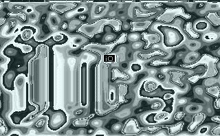

Segmentation Fault At Address 0xABAD1DEA
What's so special about 2,880,249,322? Nothing really, it's just a number all my own. My name is Abadidea, but you can call me Abby or maybe (if I really like you) Melissa. I'm a Linux person, I do NES programming and chiptunes, I love Dwarf Fortress and Vocaloid, and I do not actually have pink hair. Usually.
I am a computer security researcher playing defense at Veracode, home of the world's finest binary static analysis technology, slayers of literally millions of security bugs.
IMPORTANT NOTICE: Don't fall for impersonations! I do not post to Full-Disclosure or similar sites and lists. There are also a fair number
of photoshops of me out there. They're all very flattering.
While we have been known to engage in witty banter, I am not affiliated with Comex and I do not develop jailbreaks for any platform.
By far the most reliable way to communicate with me is Twitter. I do read everything that contains an at-mention of me, but please do not be offended if I do not reply to all of them individually.
I occasionally update my tumblr with cute pictures, generally Vocaloid/Utau themed with a pinch of Touhou. Tumblr, incidentally, does not allow usernames with a leading 0x for no apparent reason, for which I hate them forever.
If you are wondering: the pink girl in my avatar is Kasane Teto, the fictional face of a female voice synthesizer module for the freeware program UTAU. She is an affectionate parody of Hatsune Miku.
Content?! I forgot to give my old webhost my new billing address and they cancelled my account without contacting me. My fault really, but a few minor things may be lost because I was just uploading stuff and editing flatfiles haphazardly. You are probably looking for one of these things:
 My hand-drawn ANSI font for NES, including bonus wingdings. You may also grab the image to the left and do whatever you want with it, I don't really care. Edit the CHR file with YY-CHR.
Download
My hand-drawn ANSI font for NES, including bonus wingdings. You may also grab the image to the left and do whatever you want with it, I don't really care. Edit the CHR file with YY-CHR.
Download
Several years ago I had a shell on a real, actual VAX, and discovered a critical shortage of documentation on the internet. I actually resorted to rescuing the user manual from my university library's back room to find the information I needed. What I learned is distilled in this textfile for assembly programming the machine, which I have left totally unedited from its original form: Download

I did a boot sector DOS demo for an IRC channel called #io. It is a trippy melty effect that goes on forever and I am kind of proud of it, as it does not use sine tables or any tricks like that. Binary - Source (includes instructions to build and run) - Video
I swear I will finish Neslyric someday. Someday.
You should play
Dwarf Fortress, a completely free game available for Windows, Linux, and OSX. It is a top-down "roguelike" fantasy world simulator with deliberately old-fashioned graphics, where you can either direct a bunch of dwarves in carving out a mountainhome or control a single adventurer out in the world. It is ridiculously complicated and prone to disaster. For example, my most recent fort at time of writing ended early when an unattended litter of puppies starved to death in my dining hall and immediately raised as undead, killing five unsuspecting dwarves within seconds.
You should also read the fantasy adventure webcomic Drowtales, assuming you can handle the frequent character death.
You may also be interested in the site of my friend Mispy, who was once described by someone who had no idea what they were talking about as "the acolyte to Abadidea's high priestess."
This is a personal site that does not officially represent anyone or anything, including myself. Image credits: Teto Heart - Teto Clap
Last update: Feb 19 2012
© 0xabad1dea 2012